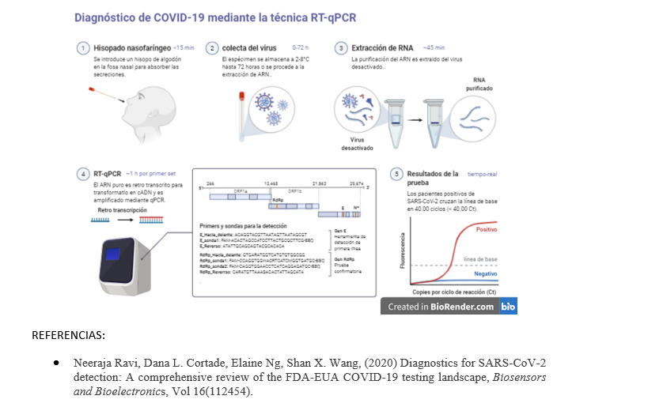

ABOUT
El estándar actual para el diagnóstico del SARS-CoV-2 es la RT-PCR. El objetivo de la Reacción en Cadena de la Polimerasa (PCR) es amplificar un gen de interés particular: teniendo un ADN patrón y cebadores específicos. Por otro lado, en la RT-PCR, el material de partida es el ARN, que se transcribe en sentido inverso en ADN complementario (ADNc) y sirve de plantilla en la reacción de PCR. Dado que el SARS-CoV-2 es un virus de ARN, la RT-PCR debe utilizarse para la detección.
Los CDC desarrollaron uno de los primeros paneles de diagnóstico de RT-PCR en tiempo real para el SARS-CoV-2. El Panel de Diagnóstico RT-PCR en Tiempo Real 2019-nCoV del CDC. Ésta es una prueba diseñada para detectar cualitativamente dos regiones diferentes del gen N: N1 y N2, así como el gen de la RNasa P (RP), a partir de hisopados nasofaríngeos, esputo, aspirados traqueales o muestras de líquido de lavado broncoalveolar. La prueba del gen RP actúa como un control interno para verificar que la RT-PCR se realizó correctamente.
Características de la RT-PCR:

